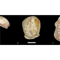

<html lang="en">
 <head>
<!-- Favicon -->
<link rel="shortcut icon" href="../../favicon.ico">
  <meta charset="utf-8"/>
  <title>
   Humans may have reached Europe by 210,000 years ago: By 40,000 years later, Neanderthals had taken over the site.
  </title>
  <meta content="Post on /v/Conspiracy from 2019-07-11 by salvia_d." name="description"/>
  <meta content="Humans may have reached Europe by 210,000 years ago: By 40,000 years later, Neanderthals had taken over the site." property="og:title"/>
  <meta content="Post on /v/Conspiracy from 2019-07-11 by salvia_d." property="og:description"/>
  <link href="../../static/css/page.css" rel="stylesheet"/>
  <meta content="https://voat.conspiracy.hackliberty.org/thumbnails/1c/bf/1cbf9b33-d986-4e7e-a417-d22dcef95dbc.png" property="og:image"/>
  <meta content="https://voat.conspiracy.hackliberty.org/v/conspiracy/3327991.html" property="og:url"/>
  <meta content="width=device-width, initial-scale=1" name="viewport"/>
  <link href="https://voat.conspiracy.hackliberty.org/v/conspiracy/3327991.html" rel="canonical"/>
  <meta content="article" property="og:type"/>
  <meta content="Voat /v/Conspiracy Archive" property="og:site_name"/>
  <meta content="en_US" property="og:locale"/>
  <meta content="summary_large_image" name="twitter:card"/>
  <meta content="Humans may have reached Europe by 210,000 years ago: By 40,000 years later, Neanderthals had taken over the site." name="twitter:title"/>
  <meta content="Post on /v/Conspiracy from 2019-07-11 by salvia_d." name="twitter:description"/>
  <meta content="https://voat.conspiracy.hackliberty.org/thumbnails/1c/bf/1cbf9b33-d986-4e7e-a417-d22dcef95dbc.png" name="twitter:image"/>
 </head>
</html>
<body class="dark">
 <div id="container">
  <!-- array (
  'submissionid' => 3327991,
  'creationDate' => '2019-07-11 13:52:19',
  'domain' => 'arstechnica.com',
  'formattedContent' => NULL,
  'isAdult' => 0,
  'isAnonymized' => 0,
  'subverse' => 'Conspiracy',
  'thumbnail' => '1cbf9b33-d986-4e7e-a417-d22dcef95dbc.png',
  'title' => 'Humans may have reached Europe by 210,000 years ago: By 40,000 years later, Neanderthals had taken over the site.',
  'url' => 'https://arstechnica.com/science/2019/07/humans-may-have-reached-europe-by-210000-years-ago/',
  'userName' => 'salvia_d',
  'archivedLink' => NULL,
  'archivedDomain' => NULL,
  'isDeleted' => 0,
) -->
  <div style="text-align:center; font-size:24px; font-weight:bold;">
   <a href="../../index.html" style="text-decoration: none; color: inherit;">
    Voat /v/Conspiracy Archive
   </a>
  </div>
  <div class="content" role="main">
   <div class="sitetable linklisting" id="siteTable">
    <div class="submission id-3327991 link type-text" id="submission-3327991">
     <a name="submissionTop">
     </a>
     <p class="parent">
     </p>
     <a class="thumbnail may-blank" href="https://arstechnica.com/science/2019/07/humans-may-have-reached-europe-by-210000-years-ago/" target="_self">
      
     </a>
     <div class="entry unvoted">
      <p class="title">
       <a class="title may-blank" href="https://arstechnica.com/science/2019/07/humans-may-have-reached-europe-by-210000-years-ago/" tabindex="1" target="_self" title="Humans may have reached Europe by 210,000 years ago: By 40,000 years later, Neanderthals had taken over the site.">
        Humans may have reached Europe by 210,000 years ago: By 40,000 years later, Neanderthals had taken over the site.
       </a>
       <span class="domain">
        (
        <a href="https://archive.searchvoat.co/search.php?d=arstechnica.com">
         arstechnica.com
        </a>
        )
       </span>
      </p>
      <p class="tagline">
       submitted
       <time datetime="2019-07-11T13:52:19+00:00" title="07/11/2019 1:52:19 PM">
        2019-07-11T13:52
       </time>
       by
       <span class="userattrs">
        <a class="author may-blank" href="https://archive.searchvoat.co/search.php?u=salvia_d">
         salvia_d
        </a>
       </span>
      </p>
      <ul class="flat-list buttons">
       <li class="first">
        <a class="comments may-blank" href="https://archive.searchvoat.co/v/Conspiracy/3327991" rel="nofollow">
         3 comments
        </a>
       </li>
      </ul>
     </div>
     <div class="child">
     </div>
     <div class="clearleft">
     </div>
    </div>
    <div class="clearleft">
    </div>
   </div>
   <div class="horizontal-line">
   </div>
   <div class="commentarea">
    <div class="sitetable nestedlisting" id="siteTable">
     <div class="child id-19861327 comment even" style="">
      <div class="entry unvoted">
       <div class="noncollapsed" id="19861327" style=";">
        <p class="tagline">
         <a class="author may-blank" href="https://archive.searchvoat.co/search.php?u=ellanana">
          ellanana
         </a>
         <span class="userattrs">
         </span>
         <time datetime="2019-07-23T05:11:26+00:00" title="7/23/2019 5:11:26 AM">
          2019-07-23T05:11
         </time>
        </p>
        <div class="usertext-body may-blank-within" id="commentContent-19861327">
         <div class="md">
          <p>
           <p>
            [[[ipi[
           </p>
          </p>
         </div>
        </div>
        <ul class="flat-list buttons">
         <li class="first">
          <a class="bylink" href="https://archive.searchvoat.co/v/Conspiracy/3327991/19861327" rel="nofollow">
           link
          </a>
         </li>
        </ul>
       </div>
      </div>
     </div>
     <div class="child id-19681635 comment even" style="">
      <div class="entry unvoted">
       <div class="noncollapsed" id="19681635" style=";">
        <p class="tagline">
         <a class="author may-blank" href="https://archive.searchvoat.co/search.php?u=pby1000">
          pby1000
         </a>
         <span class="userattrs">
         </span>
         <time datetime="2019-07-11T17:06:53+00:00" title="7/11/2019 5:06:53 PM">
          2019-07-11T17:06
         </time>
        </p>
        <div class="usertext-body may-blank-within" id="commentContent-19681635">
         <div class="md">
          <p>
           <p>
            The Neanderthals invented usury.
           </p>
          </p>
         </div>
        </div>
        <ul class="flat-list buttons">
         <li class="first">
          <a class="bylink" href="https://archive.searchvoat.co/v/Conspiracy/3327991/19681635" rel="nofollow">
           link
          </a>
         </li>
        </ul>
       </div>
      </div>
     </div>
     <div class="child id-19678655 comment even" style="">
      <div class="entry unvoted">
       <div class="noncollapsed" id="19678655" style=";">
        <p class="tagline">
         <a class="author may-blank" href="https://archive.searchvoat.co/search.php?u=derram">
          derram
         </a>
         <span class="userattrs">
         </span>
         <time datetime="2019-07-11T14:04:30+00:00" title="7/11/2019 2:04:30 PM">
          2019-07-11T14:04
         </time>
        </p>
        <div class="usertext-body may-blank-within" id="commentContent-19678655">
         <div class="md">
          <p>
           <p>
            <a href="https://archive.ph/aAkGX">
             https://archive.ph/aAkGX
            </a>
            :
           </p>
           <blockquote>
            <p>
             2019-07-10 | Humans may have reached Europe by 210,000 years ago | Ars Technica
            </p>
           </blockquote>
           <p>
            'In this case, Harvati and her colleagues came up with several potential dates, some of which are much earlier than 210,000 years ago. '
           </p>
           <p>
            'Genetic studies of Neanderthal DNA have suggested that those living in Europe sometime after 270,000 years ago met early waves of human migrants. '
           </p>
           <p>
            'The fossil, known as Apidima 1, is likely the remains of a member of an early wave of humans who spread into Eurasia. '
           </p>
           <p>
            'Harvati says that Apidima 1 may be part of that long-lost group of humans who mingled with Neanderthals and then, apparently, disappeared. ', "It's a wonder of nature that you find the two together.” The human and the Neanderthal probably died around 40,000 years apart, in different places in the labyrinthine Apidima cave system."
           </p>
           <hr/>
           <p>
            <a href="https://vgy.me/Ebtxbm.jpg">
             This has been an automated message.
            </a>
           </p>
          </p>
         </div>
        </div>
        <ul class="flat-list buttons">
         <li class="first">
          <a class="bylink" href="https://archive.searchvoat.co/v/Conspiracy/3327991/19678655" rel="nofollow">
           link
          </a>
         </li>
        </ul>
       </div>
      </div>
     </div>
    </div>
   </div>
  </div>
 </div>
<!-- Footer Section -->
<footer class="container-fluid mt-3">
  <p class="small mb-0">
    /v/conspiracy archive has 42504 posts and 159856 total comments.
    <a href="https://git.hackliberty.org/c0mmando/voat-conspiracy-archive/">source code</a>.
  </p>
</footer>

<script src="../../static/js/jquery-3.7.1.slim.min.js"></script>
<script src="../../static/js/comments-toggle.js"></script>

</body>
